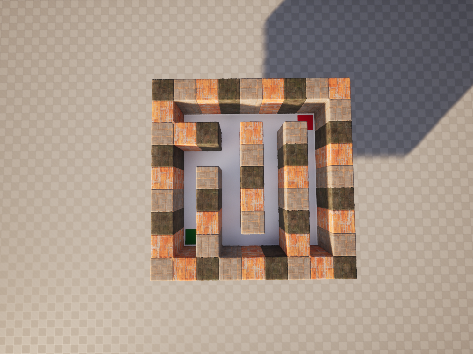
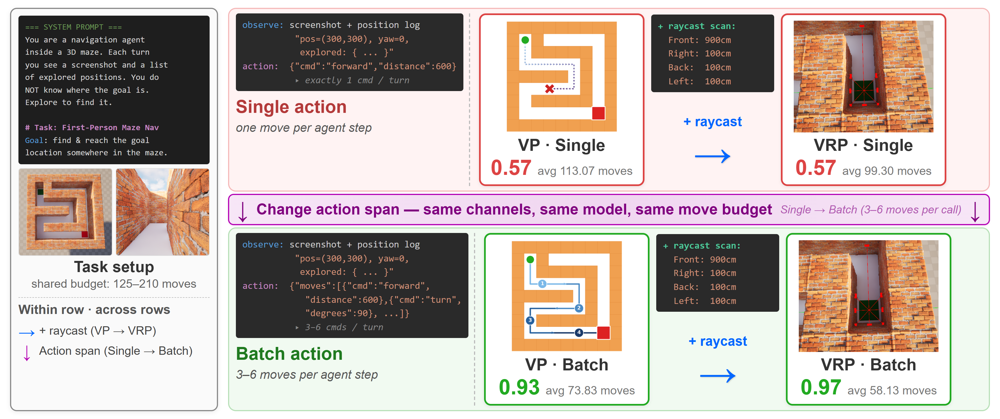

Uses Lean 4 per-seed theorems, decided via native_decide, to certify maze reachability and solvability for benchmark task instances; the Lean source is released.
Abstract
Vision-language models (VLMs) are increasingly used for spatial tasks such as navigation and manipulation, where they must infer geometry and object relationships from visual input in order to act correctly. Existing benchmarks usually test perception and reasoning in isolation, making it hard to tell whether failures come from visual understanding, downstream reasoning, or the bridge between them. We introduce VeriWorld, a benchmark for spatial reasoning in interactive 3D environments with executable actions and deterministic verification. For task families where all three channels are well-defined, we evaluate matched visual, structured, and combined input conditions on the same instance, environment, and verifier; families without a clean visual/structured/combined split are reported separately. This design supports controlled comparisons of perception, reasoning, and their interaction. Using this setup, we uncover two diagnostic findings. First, models often perform much better when task-relevant information, such as object identity, current state, or target location, is given explicitly than when it must be read from the rendered scene, revealing a recurring visual-to-structure gap. Second, action-space and harness design can change outcomes even under the same task and information condition, showing that interaction protocol is itself a confounding variable. VeriWorld is open-sourced to support reproducible and fine-grained evaluation of spatial reasoning in VLMs.
Problem
Existing spatial-reasoning benchmarks for vision-language models test perception and reasoning separately. This makes it hard to tell whether failures come from visual understanding, downstream reasoning, or the link between them.
Approach
VeriWorld provides 11 interactive 3D task families built in Unreal Engine 5, with executable actions and deterministic Python verifiers. Matched visual, structured, and combined input conditions are evaluated on the same seed-generated instances, and the action harness (e.g., batch vs. single-step control) is varied as a separate experimental variable. Some families carry solvability certificates: Lean 4 per-seed reachability theorems for mazes, or deterministic Slang/CUDA physics simulation.

Table 5: Material texture ablation (4 \times 4 maze, batch free). Each cell shows pass rate, with average rounds in parentheses. Richer visual textures (mat3) tend to improve VP pass rates by providing distinguishable landmarks.
Results
Models often do much better when task-relevant information is given explicitly than when it must be read from rendered scenes, revealing a visual-to-structure gap. Harness design also changes outcomes: batch control raises MazeNavFPS Pass@1 for Gemini-3.1-Pro from 0.57 to 0.93 (VP) and 0.97 (VRP) under an equal move budget.

Figure 1 : Batch control improves performance under both evaluated information channels at an equal move budget. Same task (MazeNavFPS, 30 mazes), same model (Gemini-3.1-Pro), and the same budget of primitive moves for both protocols (125/170/210 moves for 3{\times}3 / 4{\times}4 / 5{\times}5 grids): switching the action interface from Single (one move per call) to Batch (3–6 moves per call) lifts
Model
VP Batch
VP Single
VRP Batch
VRP Single
Gemini-3.1-Pro
0.93
0.57
0.97
0.57
Sonnet-4.6
0.83
0.70
0.73
0.37
GPT-5.2
0.67
0.43
0.60
0.43
GPT-4.1
0.47
0.33
0.67
0.33
Pooled
0.72
0.51
0.74
0.42
MazeNavFPS Pass@1, Batch vs. Single action interface under VP and VRP conditions